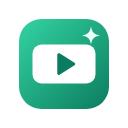
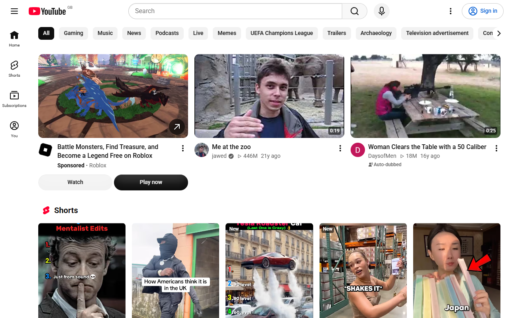
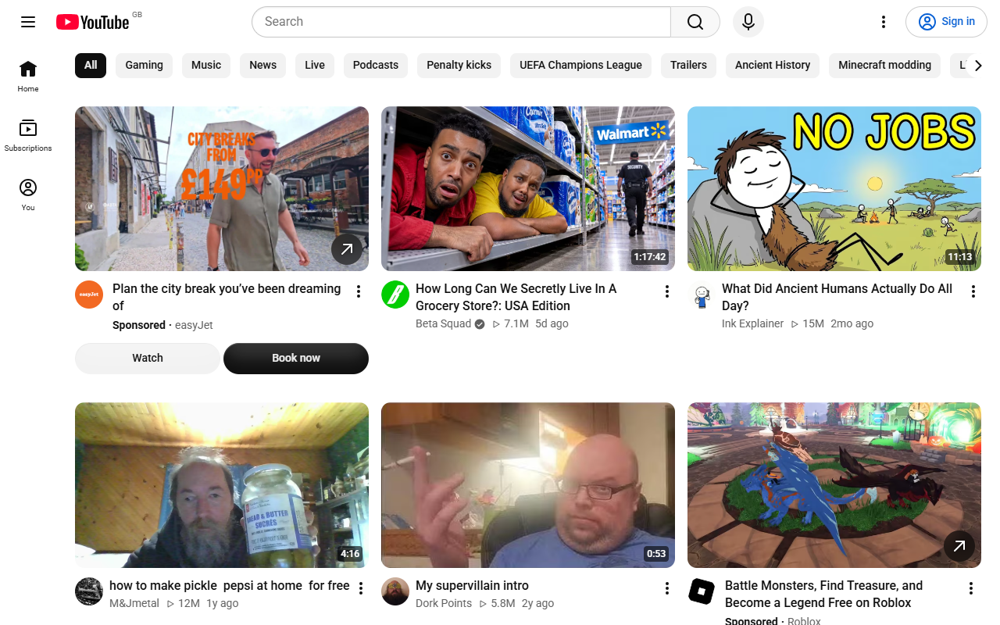

NeatHow to hide YouTube Shorts
Install Neat for YouTube, a free Chrome extension. Shorts gone. YouTube back to videos. No settings to learn: Shorts disappear from Home, search, subscriptions, channel pages and the sidebar, and any Shorts link opens as a normal video.
- No account.
- Nothing leaves your browser.
- Open source.


What it does
- Removes the Shorts shelf from Home, Subscriptions and search results.
- Hides the Shorts tab and Shorts shelves on channel pages, and Shorts in the sidebar menu and notifications.
- Opens any /shorts/ link as a normal video page, with a normal player and controls.
- Optional: hide comments, end-screen suggestions, the recommended sidebar or the whole Home feed, and turn off autoplay.
- One master switch and a keyboard shortcut (Alt+Shift+Y) to turn everything off and on.
- Allow list: keep everything visible on the channels you choose.
- Changes apply instantly — no page reload.
- Light and dark mode. Tiny, fast, and idle when the page is idle.
Steps
- Click Add to Chrome.
- Open YouTube. Shorts are gone.
- Optional: click the Neat icon to choose exactly what to hide.
Is it safe?
How it works: Neat hides page elements with a style sheet inside your browser. To keep working when YouTube changes its layout, it may download an updated list of hiding rules (a small JSON file containing only CSS selectors) once a day. That download sends no information about you, and the rules can only hide things — they cannot run code.